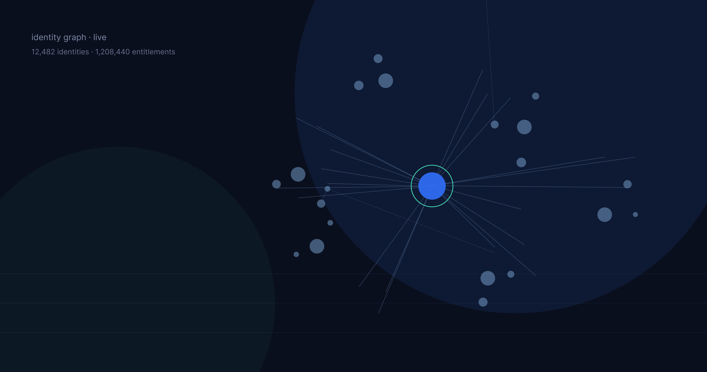
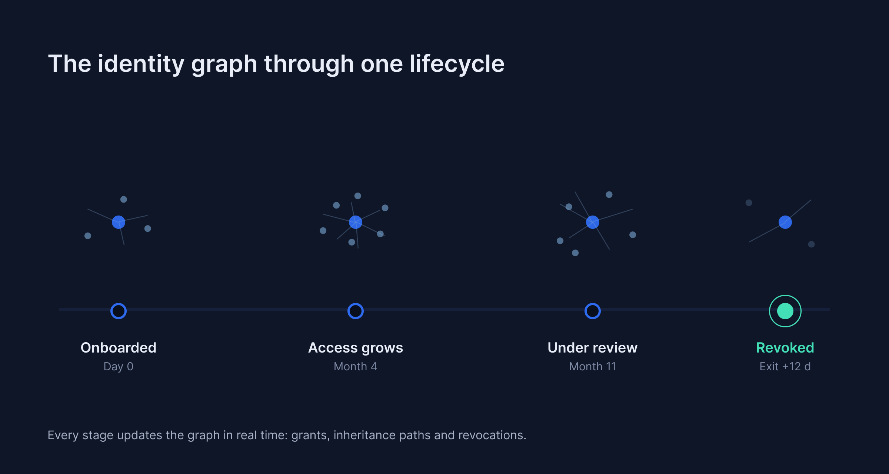
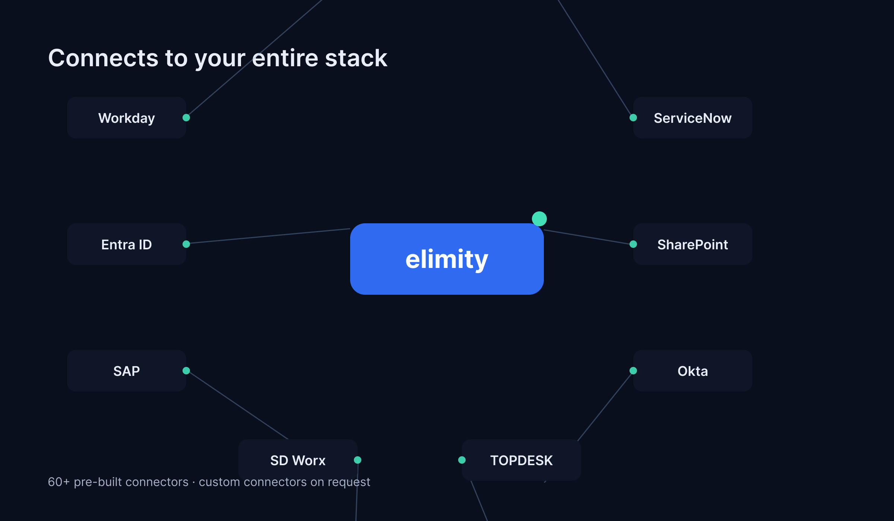
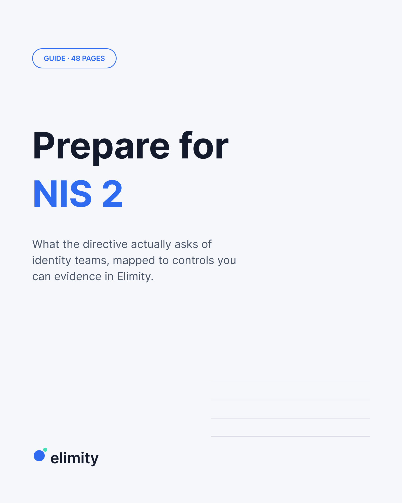

Copilots
See which assistants act for which users, and which entitlements they inherit. Revoke like any account.

Identity visibility and intelligence
Kaidra unifies identity data from every system into one source of truth. Monitor, certify and fix access in real time, from one console.
At-risk accounts · 12 weeks
Access by source
Femke V. off-boarded 12 days ago. f.vosloo is still active in SAP.
Identity visibility and intelligence
Kaidra unifies identity data from every system into one source of truth. Monitor, certify and fix access in real time.
Trusted by identity teams across Europe
From raw sources to governed access. Select a step to see what happens.
Connectors pull HR, directory, business and SaaS data on a schedule you control. Full syncs, not samples: every identity, account and entitlement lands in one pool.
Kaidra links accounts, groups, roles and entitlements into a living identity graph. Toxic combinations, dormant accounts and unexplained grants surface on their own.
Run certification campaigns, revoke orphaned access and push remediation back to the source. Every decision is logged with its reason, ready for the next audit.
One inventory across every system. Not a sample, not a spreadsheet: the full picture, refreshed continuously.
A live slice of Kaidra: search identities, inspect why access exists, revoke what should not. Simulated and fictional, all in your browser.
| Identity | Sources | Entitlements | Risk | Status |
|---|
No identity matches. Try another search.
“Our quarterly review cycle went from three weeks of spreadsheet work to a few hours. Reviewers see the context behind every grant and decide on the spot.”
Every joiner, mover and leaver updates the graph in real time. Follow one identity through its lifecycle.
Day 0
HR creates the identity. The graph links person, position and cost centre before the first account exists.

Trace any permission back to its root cause. Click each hop of the inheritance path.
Hop 1 of 4
Femke V., product designer. Off-boarded 12 days ago, yet her account still resolves to live entitlements downstream.
Filter the catalog, or search for the systems you run. Anything missing gets built on request.

No connector matches that search. Kaidra builds custom connectors on request.
Compare the quarterly ritual with the Kaidra way. Toggle to switch.
Conferences, webinars and hands-on sessions across Europe. Bring your hardest access problem, leave with an answer.
Utrecht · booth and live console demos
Nuremberg · identity governance track
Live webinar · 45 minutes, real console
Munich · European identity week
New Kaidra for Agentic AI
Copilots, MCP servers and autonomous agents act on someone's behalf. Kaidra governs them like any other identity: who they act for, and what they can reach.
See which assistants act for which users, and which entitlements they inherit. Revoke like any account.
Gate tool access per identity. If an agent should not touch finance data, the graph says so before the call does.
Entitlements, review campaigns and audit trails for agents, exactly as for people. No shadow workforce.
Field notes from identity teams, not recycled listicles.

Guide · 48 pagesWhat the directive actually asks of identity teams, mapped to controls you can evidence in Kaidra.
Download GuideKPIs for access risk, review speed and orphan decay. With formulas.
Download WhitepaperGoverning copilots and agents before they govern you.
DownloadBring two systems you care about. We will show you the graph they make together, live.